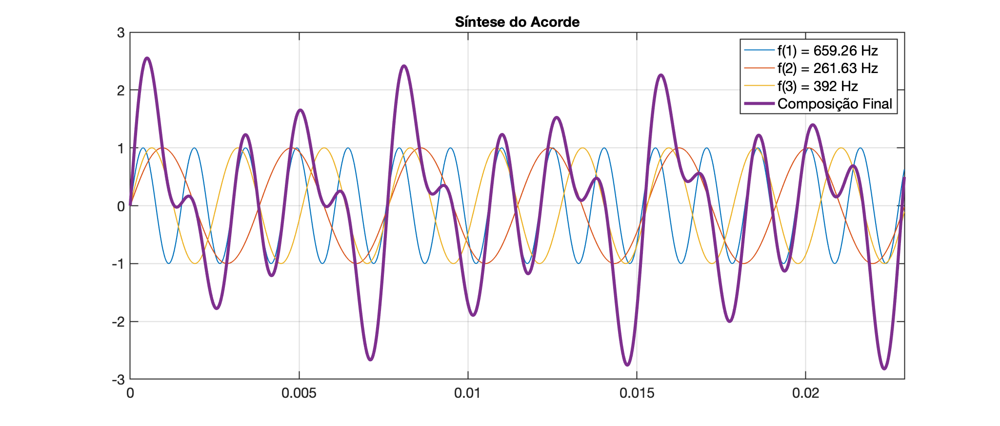
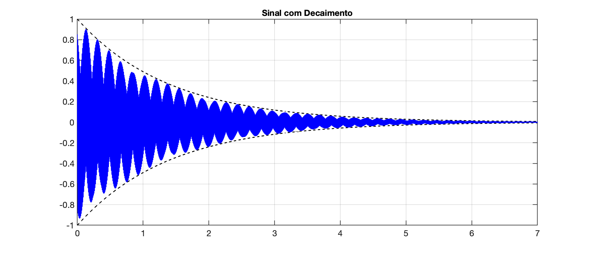

Vamos supor que queremos gerar o acorde do tipo aberto, maior, formado pela combinação das notas: Dó (oitava superior) + Mi (oitava inferior) + Sol (oitava superior).
As frequências de cada nota seriam:
Mi = 164,81 Hz (E3 <-- E2); --> ou: E3 = 329.627533 Hz;
Dó = 261,63 Hz (C4 <-- C3); --> ou: C4 = 523.251099 Hz;
Sol= 392,00 Hz (G4 <-- C3). --> ou: G4 = 783.990845 Hz.
Obs.: Depos de consultar a Tabela de Frequências, Períodos e Comprimentos de Onda, percebemos que estamos gerando um acorde algo grave.
Exemplo de código:
x
% Programa para sintetizar um acorde do tipo aberto, maior, formado pela combinação% das notas: Dó (oitava superior) + Mi (oitava inferior) + Sol (oitava superior):%% Mi = 164,81 Hz (~~E3~~ <-- E2); --> ou: E3 = 329.627533 Hz;% Dó = 261,63 Hz (~~C4~~ <-- C3); --> ou: C4 = 523.251099 Hz;% Sol= 392,00 Hz (~~G4~~ <-- C3). --> ou: G4 = 783.990845 Hz.%% Obs: amplitudes unitárias e defasagens nulas%% Fernando Passold, em 18/05/2026
clear all % limpa workspace (todas as variáveis já existentes)clc % limpa janela de comandos
t_fim=7; % duração em segundos do acorde
disp('Frequências das notas:')% f=[164.81 261.63 392.00]; % freq's das notas: E2, C3 e G3% Seguindo certa sensibilidade musical, decidiu-se modificar oitava da nota Mi% antes muito grave (2a-oitava), eventualmente mau executada em alto-faltantes de notebooks
f=[659.26 261.63 392.00] % freq's das notas: E4, C3 e G3
% monta string da legendafor freq = 1:length(f) msg1 = num2str( freq ); % transforma valor em string msg2 = num2str( f(freq) ); % transforma valor em string msg3 = ['f(', msg1, ') = ', msg2, ' Hz']; % 'f(1) = 659.26 Hz' legenda(freq) = string(msg3); % transforma cada pedaço numa stringendlegenda(freq+1)="Composição Final";% legenda % usar apenas para verificação
fs=48E3; % freq. de amostragem (48 KHz)T=1/fs;disp('Quantidade de pontos (amostras) geradas:')pontos=t_fim/T % quantidade de pontos que serão geradosy=zeros(pontos, length(f)+1); % inicia com vetor zerado% t=[0:T:t_fim]; % gera matriz 1 x 240001t=[0:T:t_fim-T];t=t'; % matriz de 240000 x 1
% Sintetizando vetor y(t) do acorde% y1=1*sin(2*pi*f*t+defasagem);% y[]=1*sin(2*pi*f(1, k)*t);% y=y1+y2+y3;for tt = 1:length(t) for freq = 1:length(f) % y(tt, 1) = y(tt, 1) + 1*sin(2*pi*f(1, freq)*t(tt)); y(tt, freq) = 1*sin(2*pi*f(1, freq)*t(tt,1) ); % amplitude para cada nota no instante t y(tt, length(f)+1) = y(tt, length(f)+1) + y(tt, freq); % somar amplitudes das nota em cada instante t endend
% Plotando as formas de ondamenor_freq=min(f);intervalo_tempo=6*(1/menor_freq); % motrando 6 ciclos da menor freqamostras=round(intervalo_tempo/T);figure;plot( t(1:amostras,1), y(1:amostras, 1));hold onfor freq = 2:length(f)+1 if freq < length(f)+1 plot( t(1:amostras, 1), y(1:amostras, freq)); else plot( t(1:amostras, 1), y(1:amostras, freq), 'LineWidth', 3); endendlegend(legenda);title("Síntese do Acorde")xlim([0 intervalo_tempo]);
% Normalizando ampitude do sinal para faixa [-1 1]disp('Picos de amplitudes sinal composto:')maximo=max(y(:, length(f)+1)) %*1.1 % 10% a maisminimo=min(y(:, length(f)+1)) % *1.1if maximo > abs(minimo) maximo = maximo;else maximo = abs(minimo);endyy=y(:, length(f)+1)*(1/maximo);
% Aplicando decaimento % ganho(t) = exp(=t/tau)% ts = 4*tau% ts = t_fimdisp('Constante de decaimento:')tau = t_fim/5for tt = 1:length(t) y1(tt) = exp(-t(tt,1)/tau); y2(tt) = -y1(tt); yy(tt) = yy(tt)*exp(-t(tt,1)/tau);endfigure; % nova figuraplot(t,y1,'k--', t,y2,'k--', t,yy,'b-')title("Sinal com Decaimento");ylim([-1 1]);
sound(yy, fs)disp('Se quiser ouvir novamente, digite:')disp('sound(yy,fs)')
Resultado:
xxxxxxxxxxFrequências das notas:f = 659.26 261.63 392Quantidade de pontos (amostras) geradas:pontos = 336000Picos de amplitudes sinal composto:maximo = 2.9963minimo = -2.9963Constante de decaimento:tau = 1.4Se quiser ouvir novamente, digite:sound(yy,fs)>> sound(yy,fs)Gráficos gerados:

Vetor yy final:

Clique abaixo
se quiser ouvir o resultado.
Seguir para: Síntese #2 (COM harmônicas) | Proposta Trabalho 2026/1 .
Fernando Passold, em 18/05/2026.